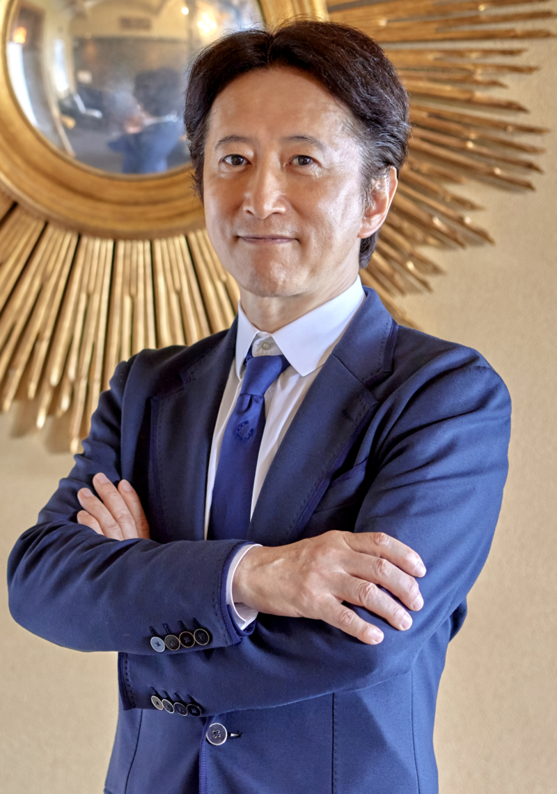

Hirohiko Araki

Summary
Hirohiko Araki is a celebrated manga artist best known for creating the long-running series "JoJo's Bizarre Adventure," which has captivated audiences with its unique art style and imaginative storytelling.
Manga Artist
Innovator
Visionary
Life Timeline
- Born June 7, 1960
- Started "JoJo's Bizarre Adventure" in 1987
- First part "Phantom Blood" published in 1987
- Launched "Stardust Crusaders" in 1989
- Introduced "Stand" abilities in 1989
- Received the Tezuka Osamu Cultural Prize in 2002
- Expanded "JoJo's" into an anime series in 2012
- Celebrated 30 years of "JoJo" in 2017
- Continues to create new chapters in 2023
- his favourtite jojos charater is Josuke Higashikata
- in 2009, Hirohiko Araki was one of five artists selected by the Musée du Louvre to create original works set at the famous museum.
"The most important thing is to keep creating." - Hirohiko Araki
Works Cited